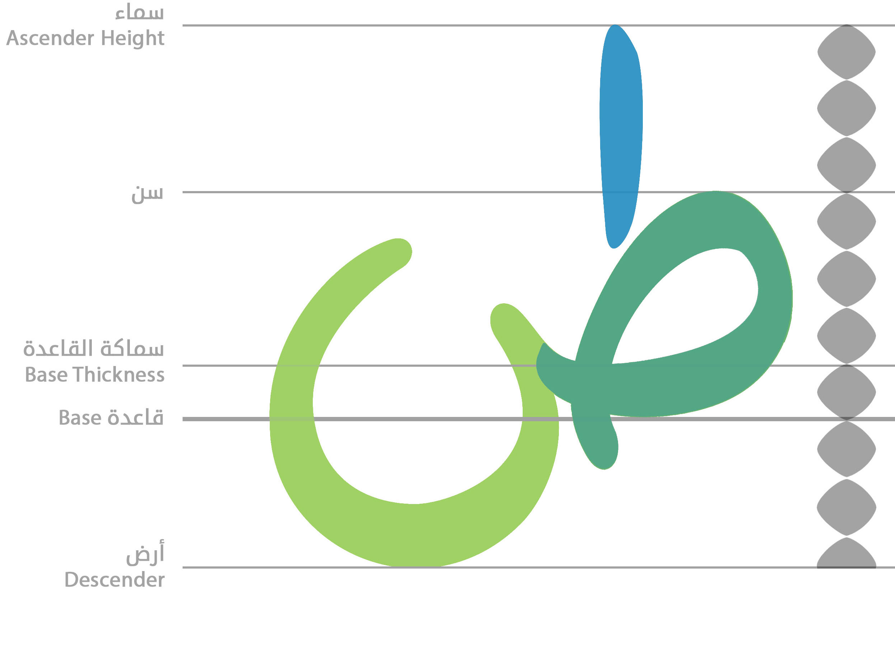

Motivation and Tools
A fascination with design and typography led me to try creating my own font. I was determined to incorporate aspects of my own handwriting into the style of the font, and I thought it would be an unique asset to have a usable font face which reflected aspects of myself, reproducible in a digital medium.
I created each glyph and its required variants in Adobe Photoshop and Illustrator, then used FontStudio and Microsoft Volt to compile the font, create a variety of ligatures and special characters, and allow it to display in the natural order when typing. LaTex word processing was used in the final steps of the project to create a sample text styled with the font.